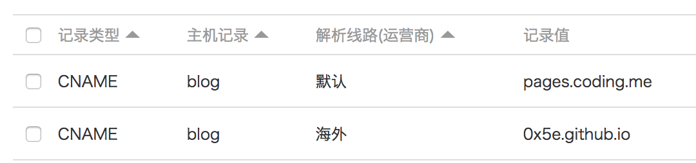

Hexo同时部署到Github和Coding并分流
最近比较闲，可以整理一下博客。。
做分流是因为，平时还是Github用的多，不想把博客的项目单独存放在Coding上，但是呢又想让国内访问快一点（是不是很矫情）
本文主要内容有：
- travis自动部署
- 生成ssh key
- 设置deploy key
- 绑定自定义域名
- 域名海内外分流
用户 Pages & 项目 Pages
每个用户只能创建一个用户Pages，每个项目只能创建一个项目Pages。
用户Pages只能从master分支部署，这个坑了我好久，没看仔细。。
https://coding.net/help/doc/pages/index.html#pages–pages
| Pages类型 | Pages默认URL | 允许的部署来源 |
|---|---|---|
| Github 用户 Pages | {user_name}.github.io |
master 分支 |
| Github 项目 Pages | {user_name}.github.io/{project_name} |
master分支、gh-pages分支、或master分支中的/docs目录 |
| Coding 用户 Pages | {user_name}.coding.me |
master 分支 |
| Coding 项目 Pages | {user_name}.coding.me/{project_name} |
master分支、coding-pages分支、或master分支中的/docs目录 |
部署
因为上面的原因，我把博客源文件存放在0x5e.github.io的blog分支，编译的网页文件提交到0x5e.github.io和0x5e.coding.me的master分支。（建仓库就不说了）
本地部署
安装插件：
1 | yarn add hexo-deployer-git |
在_config.yml文件添加配置：
1 | # Deployment |
新建一篇文章，然后执行hexo deploy，完成。
Travis自动部署
创建ssh key
1 | $ ssh-keygen -t rsa -C "Travis CI" |
设置为项目deploy key
把刚才创建的ssh公钥加入项目中，注意：需要开启写入权限
Github: Settings => Deploy keys => Add deploy key
Coding: 设置 => 部署公钥 => 新建部署公钥
加密ssh私钥
1 | # Install travis |
把生成的id_rsa.enc保存到.travis/id_rsa.enc，待会用到
修改配置文件
修改.travis.yml配置文件：
1 | language: node_js |
encrypted_xxx_key，encrypted_xxx_iv改为对应的值，还有name & email。
ssh_known_hosts也需要添加，不然第一次链接ssh的时候会提示输入yes/no，导致无法自动构建而失败。
绑定自定义域名
Github: 新增一条CNAME记录到{user_name}.github.io。
Coding: 新增一条CNAME记录到pages.coding.me，然后在项目设置里添加自定义域名。
海内外分流
其实就是添加两条相同的主机记录，分别到Github和Coding，只是解析线路一条设置为海外，一条设置为国内（默认），如图：

就这样。。